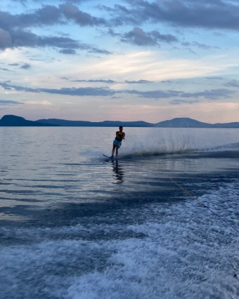

About David Nitschke
Hello my name is David Nitschke and this is my first year at the University of Rhode Island. I grew up in Cape Cod with my two loving parents Paul and Diane Nitschke, along with my amazing and very artistic sister Caitlin Nitschke. I graduated Bourne High School in 2020 and througouht high school I did many activities. This includes XC, Basketball, Tennis, Band, Chorus, and Drama. I enjoy playing the saxophone and singing. I also enjoy calisthenics and exercising in general. Some of my favorite things to do are hanging out with my friends, and playing sports. I also love all watersports along with downhill skiing. So far I am enjoying college a lot, and I have found a new fascination with computer science and I look forward to studying it for my next four years at URI.

|

|